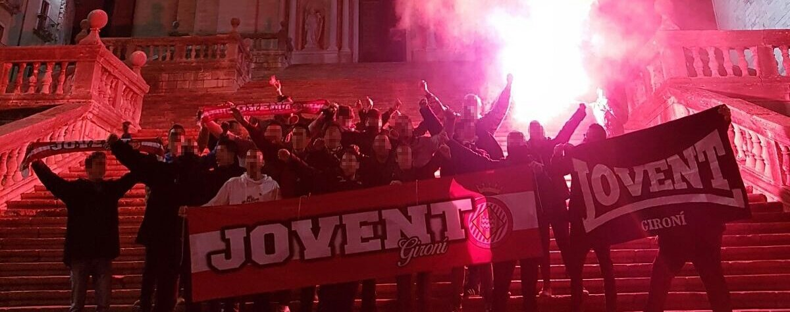
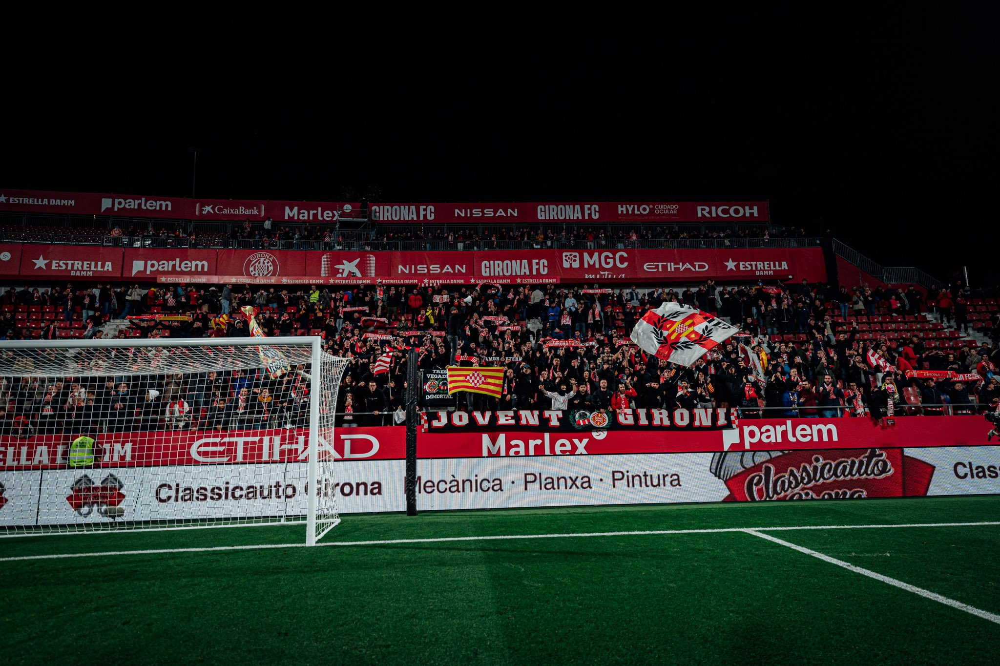
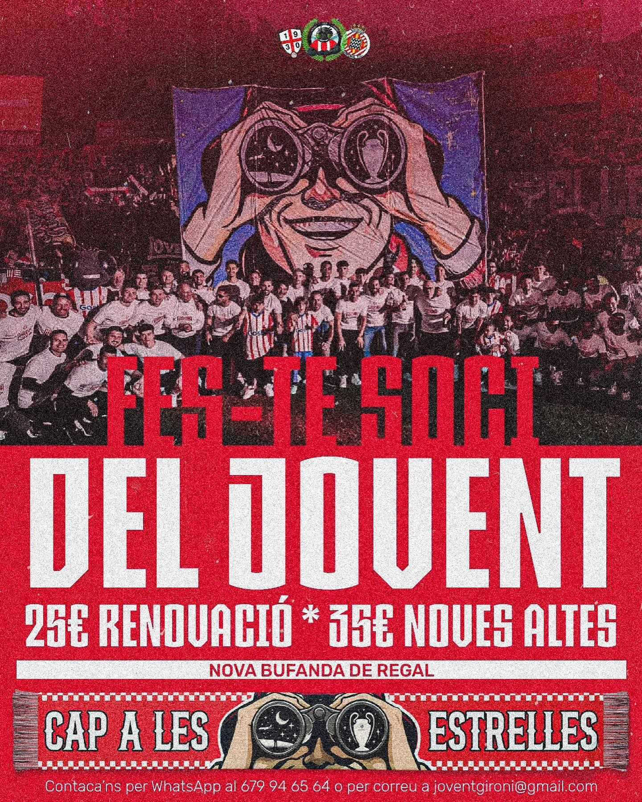

Qui som?
Som el Jovent Gironí, la grada d’animació oficial del Girona FC. Nascuts l’any 2017, vam créixer des del cor de Montilivi amb un objectiu clar: fer vibrar l’estadi, portar l’equip en volandes i donar-li veu a l’afició més jove, valenta i apassionada. Ens organitzem per posar color, crit i ànima a cada partit —a casa o fora— perquè cap jugador se senti mai sol. El nostre batec es nota als bombos, als càntics, a les banderes i sobretot a l’amistat que ens uneix. Viure el futbol com nosaltres no és només animar: és sentir, créixer i compartir-ho tot com una gran família blanc-i-vermella.

El que fem
- Ens deixem la veu cada jornada a Montilivi, liderant els càntics, movent banderes i fent tremolar la graderia.
- Ens movem per tot arreu: organitzem desplaçaments en grup a totes les ciutats on juga el Girona FC. Plogui, nevi o faci sol, hi serem.
- Creem pancartes, coreografies i bombos totalment propis, fets entre tots amb ganes, suor i molta il·lusió.
- Preparem festes, dinars populars i trobades per mantenir la pinya ben viva entre tota la nostra gent.
- Defensem valors com el respecte entre aficions, la germanor entre companys i la passió neta pel futbol.
- Compartim l’amor pel Girona FC amb qualsevol que el senti, sigui gran o petit, sigui del poble o vingui de fora.

Per què ho fem
No som només aficionats. Som una família. Perquè creiem que el futbol és molt més que 90 minuts: és cultura, és amistat, és emoció pura. Ho fem per sentir-nos vius, per fer tremolar Montilivi i perquè sabem que sense afició, no hi ha equip.
Què ens defineix
🔥 Passió
Vivim cada partit amb el cor a la mà. Si el Girona juga, nosaltres hi som.
🎉 Comunitat
No vens sol a l’estadi, vens amb una colla que et cridarà al costat.
🎵 Càntics propis
Tenim la nostra banda sonora, feta amb veu, bombo i sentiment.
🌍 Viatges
Sigui a Olot, París o Madrid, sempre som allà animant sense parar.
Convocatòria de Nous Membres del Jovent Gironí
Benvolguts/des,
El Jovent Gironí convoca a tots aquells amb passió pel Girona FC i ganes d'animar la grada a formar part del nostre equip d'animació. Si vols viure l'experiència única de donar ànima als partits, compartir moments inoblidables amb la nostra comunitat i contribuir al creixement del grup, aquesta convocatòria és per a tu.
Requisits:
- Ser apassionat del futbol i del Girona FC.
- Tenir ganes de participar activament en les activitats i esdeveniments del Jovent Gironí.
- Compromís amb els valors de la nostra organització: respecte, amistat i passió per l'animació.
Què oferim:
- Una formació dinàmica i propera als professionals de l'animació.
- La possibilitat de participar en viatges, partits i activitats exclusives.
- Un ambient de treball col·laboratiu, on cada membre aporta el seu valor i energia.
Com inscriure's i condicions:
Per formar part del Jovent Gironí, envia'ns el teu interès a través del nostre formulari de contacte indicant el motiu "Fes-te soci". Un membre de l'equip es posarà en contacte amb tu per explicar-te el procés d'inscripció i les condicions corresponents.

Preu Renovació: 25€
Preu Noves Altes: 35€
Regal de nova bufanda temporada 2024/2025
FES-TE SOCI ARANo deixis passar aquesta oportunitat de formar part d'un projecte que impulsa la passió per l'animació del Girona FC i que fa vibrar la grada amb energia i entusiasme!
Atentament,
El President del Jovent Gironí